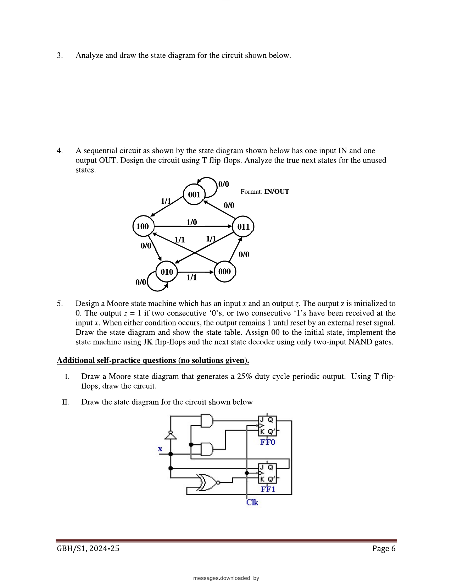
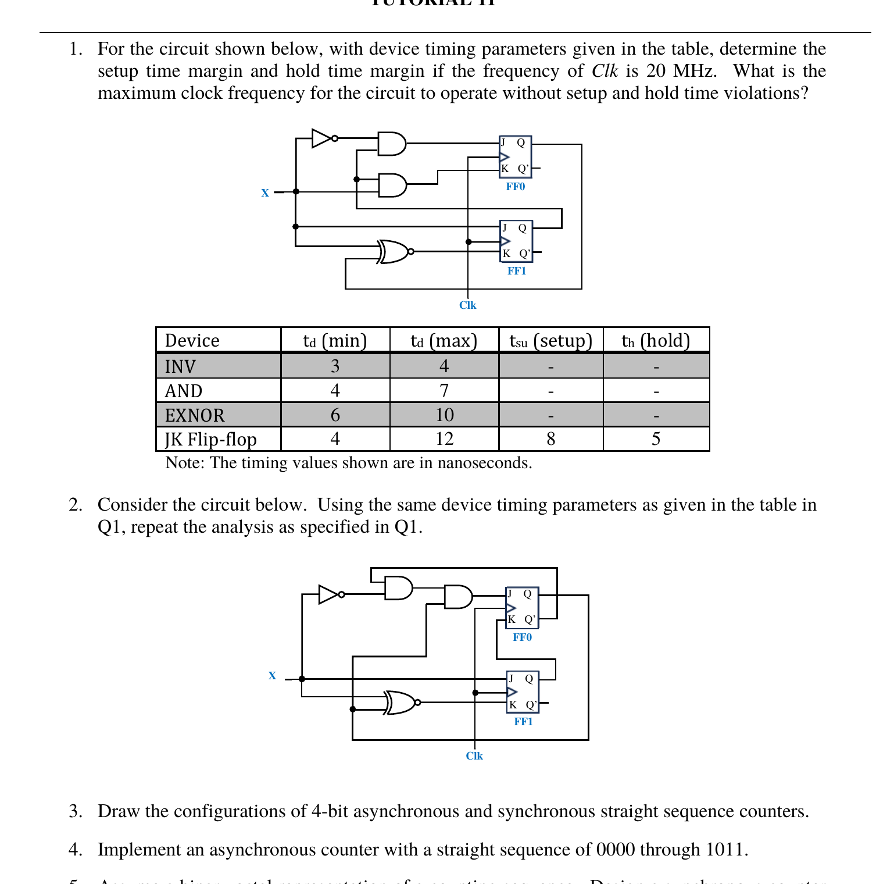

Week 11 — Designing FSMs, and the Timing Budget That Limits Them
Lecture: "Sequential Circuits" (pages 77–94, plus 2–15) · Tutorial 10 Q4–Q5 · Tutorial 11 Q1–Q2
This is the classic single-read layout. Prefer concepts interleaved with practice questions? → Interleaved layout
📚 Slides, Slowly
Part A — Designing a synchronous FSM from a specification
Week 10 was "given a circuit, find its behaviour". This week reverses it one more time: "given a plain-English behaviour, build the circuit". The recipe:
- Study the specification; sketch sample input/output sequences until you're sure you understand exactly what's being asked.
- Draw the state diagram: start from a reset state, and add a new state only when you need to "remember" something you can't already tell from an existing state.
- Build the present-state/next-state table.
- Decide how many flip-flops you need: nF = ⌈log₂(nS)⌉, where nS is the number of states.
- Assign a binary code to each state.
- Pick a flip-flop type, and use its characteristic/excitation table to get the flip-flop input equations.
- K-map and simplify the next-state and output equations.
- Draw the final logic circuit.
The trickiest new skill is step 2. A few concrete guidelines from the slides: work out the reset condition first; if only a few input sequences actually produce a nonzero output, start by drawing just those paths and fill in the rest afterward; whenever you're about to add an arrow, first check whether it can loop back to a state you've already defined, rather than always creating a new one; and — this is an easy one to forget — every state must have exactly one outgoing arrow for every possible input combination, no more, no less.
Worked example: a 101-sequence recognizer (with overlap)
Specification: one input X, one output Z; Z=1 the instant the most recent 3 bits received were 1,0,1 — and overlapping occurrences must count (e.g. input …10101… should flag twice, not once).
| S0 (reset) | haven't seen anything useful yet. |
|---|---|
| S1 | "remembering" that the most recent bit was a 1 (the first bit of a possible 101). |
| S2 | "remembering" that the most recent two bits were 10 (two-thirds of the way to a match). |
3 states → nF = ⌈log₂3⌉ = 2 flip-flops. Assign S0=00, S1=01, S2=10 (state 11 is unused). Using D flip-flops (so DA=At+1, DB=Bt+1 directly), the lecture arrives at:
I checked all three equations against every defined row of the present/next-state table (the two rows for state 11 are don't-cares, since that state is never used) — every single one matched, including the output equation correctly firing Z=1 only at the one row where A=1 (state S2, "seen 10") and X=1 (completing the 101).
Two more worked examples, briefly
| Robot/maze controller | 4 states tracking "no obstacle, last turn left/right" vs. "obstacle, currently turning left/right" — a nice example of a state diagram whose states are named for what the machine remembers, not just numbers. Designed with JK flip-flops using the same recipe. |
|---|---|
| Vending machine controller | 4 states (0¢, 10¢, 20¢, 30¢ deposited so far) with inputs N (10¢ inserted), Y (20¢ inserted), and outputs R (release candy), C (release change) — a good example of a design with built-in don't-cares (N=Y=1 in the same cycle is physically impossible, so those rows are never constrained), designed with T flip-flops. |
Both follow the exact same 8-step recipe as the 101-recognizer — once you've built one FSM design end to end and trust it, the rest is repetition with different specifications.
Part B — Timing: why a synchronous circuit has a maximum clock speed
Every real gate and flip-flop has a delay — and a flip-flop specifically needs its input to behave in a very particular way around the clock edge, or its output becomes unpredictable.
| Setup time (tsu) | the input must already be stable for at least this long before the active clock edge. |
|---|---|
| Hold time (th) | the input must stay stable for at least this long after the active clock edge. |
Violate either one, and the flip-flop's output isn't guaranteed to be a clean 0 or 1 at all — it can settle at an in-between, undefined voltage called a metastable value, which is exactly as unpredictable as it sounds.
The launching edge, the capturing edge, and the clock period budget
In a real chain — source flip-flop → combinational logic → destination flip-flop, both clocked by the same signal — one clock edge "launches" new data out of the source flip-flop, and the next edge (one clock period later) "captures" it into the destination flip-flop. Everything in between has to happen inside that one period:
| tpff,max | worst-case time for the source flip-flop's output to actually change, after the launching edge. |
|---|---|
| tns,max | worst-case propagation delay through the combinational next-state logic sitting between the two flip-flops. |
| tsu | the destination flip-flop's own setup time — it needs the signal to have arrived at least this long before the capturing edge. |
Notice this uses maximum delays throughout — you always design for the worst case, because the clock has to work correctly on every single cycle, not just the lucky fast ones.
The hold-time check runs in the opposite direction and uses minimum delays instead: if the data path is too fast, new data can race through and corrupt the destination flip-flop before it's finished reliably capturing the old value from the previous edge:
This is why the datasheet always gives delays as a min/max range, not a single number — real delays genuinely vary with supply voltage, temperature, and manufacturing differences between individual chips (often abbreviated "VTP" in the slides), so a correct design has to survive the entire range, not just typical conditions.
Worked example 1: checking a single flip-flop's own setup/hold margins
Given: an inverter with delay 5–15ns feeding a flip-flop with tpff=10–40ns, tsu=20ns, th=5ns, clocked at TCLK=100ns.
Min total delay = tpff,min + tinv,min = 10 + 5 = 15ns
Setup margin = (TCLK − tsu) − max delay = (100−20) − 55 = +25ns (comfortably positive — no violation). Hold margin = min delay − th = 15 − 5 = +10ns (also fine). I re-derived both of these directly from the given numbers and they match the lecture's stated results exactly.
Now shrink the clock to TCLK=70ns instead (nothing else changes — hold time never depends on the clock period, only setup time does): setup margin = (70−20) − 55 = −5ns. Negative — setup time violation. This is the single most important intuition to walk away with: shrinking the clock period only ever threatens setup time; it can never cause a new hold violation, because hold time is checked entirely within one clock edge's neighbourhood, independent of how far away the next edge is.
Worked example 2: comparing two different paths to find the true worst case
Given: an XOR gate (15–30ns) feeding flip-flop A directly, and that same XOR feeding an AND gate (10–20ns) in series before reaching flip-flop B; both flip-flops share tsu=20ns, th=15ns, tpff=10–40ns, clocked at TCLK=100ns.
Setup check — always use the slowest (longest-delay) path, which is the one through both gates in series to flip-flop B: tpcomb,max = 30+20 = 50ns. Required: TCLK ≥ tpff,max+tpcomb,max+tsu = 40+50+20 = 110ns. But TCLK is only 100ns — 10ns short: setup time violation.
Hold check — always use the fastest (shortest-delay) path instead, which here is a direct 0-delay path: tpff,min+tpcomb,min = 10+0 = 10ns, which needs to be ≥ th=15ns. It isn't — 5ns short: hold time violation too. I re-verified both margins arithmetically and they match the lecture's stated conclusion.
The general principle this example is really teaching: always separately identify the slowest path for the setup check and the fastest path for the hold check — in any circuit with more than one route from source to destination flip-flop, these are almost never the same path.
Clock skew and jitter: the clock itself isn't perfectly synchronized either
| Clock skew | the clock edge physically arrives at different flip-flops at slightly different times, because of unequal wire lengths/paths — a static, spatial effect (it's the same every cycle, just different by location). |
|---|---|
| Clock jitter | the clock edge's exact timing wobbles cycle to cycle, from thermal/power-supply noise — a random, temporal effect (same location, different every cycle). |
Either one eats directly into your setup/hold margins. (This year's Tutorial 11 doesn't add an explicit δ skew term on top of the circuit the way an older version of this tutorial used to — but clock skew itself is still directly examinable, see the worked skew question on the Exam Practice page.)
🔗 Tutorial 10 (Q4–Q5) & Tutorial 11 (Q1–Q2), Linked Back

Design a Moore machine with input x, output z. z=1 once two consecutive 0's or two consecutive 1's have been received, and stays 1 until an external reset. Assign 00 to the initial state; implement with JK flip-flops and a next-state decoder built only from 2-input NAND gates.
States: S0=00 (reset, nothing seen yet), S1=01 (last bit was a single 0), S2=10 (last bit was a single 1), S3=11 (two matching bits seen — latched, z=1 forever until reset). 4 states exactly fits 2 flip-flops (A,B), no unused codes.
| A B x | A* B* | A B x | A* B* |
|---|---|---|---|
| 0 0 0 | 0 1 | 1 0 0 | 0 1 |
| 0 0 1 | 1 0 | 1 0 1 | 1 1 |
| 0 1 0 | 1 1 | 1 1 0 | 1 1 |
| 0 1 1 | 1 0 | 1 1 1 | 1 1 |
I derived the JK excitation values for every row (using the JK excitation table from Week 8: 0→0 is J=0,K=X; 0→1 is J=1,K=X; 1→0 is J=X,K=1; 1→1 is J=X,K=0), then K-mapped each of JA, KA, JB, KB with the don't-cares — every reduction below was double-checked by substituting all 8 rows back in by computer and confirming an exact match against the table above:
Converting to 2-input NAND gates only, using De Morgan (Week 4) on each OR term: A+B = NAND(Ā,B̄), and any plain AND term X·Y = NOT(NAND(X,Y)) = a NAND followed by a second NAND wired as an inverter. So:
| JA = B+x | NAND(B̄, x̄) — needs inverters (NAND with both inputs tied together) on B and x first. |
|---|---|
| KA = B̄x̄ | invert the output of NAND(B,x) once (feed it into a second NAND wired as an inverter). |
| JB = A+x̄ | NAND(Ā, x) — needs an inverter on A only. |
| KB = Āx | invert the output of NAND(A,x) once. |
| Z = AB | invert the output of NAND(A,B) once. |
Every gate used here is a 2-input NAND (some wired as plain NANDs, some wired as inverters by tying both inputs together) — satisfying the question's constraint exactly.
A sequential circuit given by a 5-state diagram (using 3-bit state codes 000,001,010,011,100 — codes 101,110,111 unused) has one input IN, one output OUT. Design using T flip-flops; analyze the true next states for the unused states.
Same recipe as T10 Q5 above: read each state's two labelled transitions (IN=0, IN=1) off the diagram, build the present/next-state table, then derive TA,TB,TC using the T flip-flop's excitation rule (T=0 whenever the bit doesn't change, T=1 whenever it does — the simplest excitation table of all four flip-flop types, from Week 8). K-map each of TA,TB,TC and OUT, treating the 3 unused codes as don't-cares in your K-maps.
The actual point of the exercise — "analyze the true next states for the unused states": once you've picked specific minimal equations for TA,TB,TC (fixing your don't-cares to particular 0/1 values in the process, same as any K-map simplification), go back and plug the 3 unused codes into those specific final equations and see where they actually land. This is exactly the "unused vs. hold state" check from Week 10: if an unused code's true next-state (under your chosen equations) eventually leads back into the main 5-state cycle within a state or two, the design is self-recovering; if it maps to itself or to another unused code forever, you've accidentally built a hold state, which is usually undesirable unless specifically intended.
I'll be upfront rather than guess here: the exact arrow directions in this diagram's crossing/diagonal lines carry the same transcription risk flagged in Tutorial 10 Q1 — safer to trace the five states' ten labelled transitions directly off your own printed copy using the method above than to trust a possibly-misread diagonal from a scan.

For each circuit (device delays: INV 3–4ns, AND 4–7ns, EXNOR 6–10ns, JK flip-flop td 4–12ns/tsu 8ns/th 5ns), find the setup time margin and hold time margin if the frequency of Clk is 20MHz, and the maximum clock frequency for the circuit to operate without setup and hold time violations.
Changed from last year's tutorial set: the older version of this question inserted an explicit clock-skew element δ into the circuit and asked for the margins twice — once at δ=0, once at δ=3ns. This year's Q1/Q2 drops δ entirely; it's just one straightforward setup/hold + maximum-frequency calculation per circuit now. (Clock skew hasn't disappeared from the syllabus — it's tested on its own in a past-paper question, see Exam Practice.)
Both circuits are self-contained 2-flip-flop feedback networks — X and the flip-flops' own Q outputs feed back through a small network of gates (an inverter, one or two ANDs, and an EXNOR — the exact wiring differs between Q1 and Q2) straight into J and K of FF0 and FF1, with both flip-flops sharing the same Clk. That's a slightly different shape from Worked Examples 1–2 above, which had a clean "source flip-flop → logic → separate destination flip-flop" chain — here, each flip-flop's own next state can depend on X and on both flip-flops' current Q outputs, so the "combinational logic" in the timing budget is whichever chain of gates sits between a Q (or X) and that flip-flop's own J/K pin.
Hold margin = (tpff,min + tns,min) − th
Step 1 — for each of FF0's and FF1's J and K inputs, trace back through the gate network to find every path that reaches it, and add up the maximum delay of every gate sitting in series along that path (plus tpff,max if the path starts from a Q output rather than straight from X). Take the largest total across every path you found — that's the setup-limiting path.
Step 2 — for the hold check, repeat with every gate's minimum delay instead, and take the smallest total (the fastest path is the one that risks a hold violation, exactly as in Worked Example 2 above).
Step 3 — maximum clock frequency: rearrange the setup formula around the single worst (largest) tns,max path you found across both flip-flops: TCLK,min = tpff,max + tns,max + tsu, then fCLK,max = 1/TCLK,min.
I'm presenting this as a fully worked method with the real component numbers rather than asserting specific final nanosecond totals, for the same reason flagged elsewhere on this site: getting the right answer depends entirely on correctly counting how many gates sit in series along each specific feedback path, and a small feedback network like this — where a gate's own output can loop back around into an earlier gate — is genuinely easy to mis-trace from a scanned diagram rather than the original file. What I can confirm directly from the AY2026-27 sheet: every path in both circuits runs through some combination of INV (1 gate), AND (1–2 gates in series depending on the path), and EXNOR (1 gate) before reaching a J/K pin — so no path is more than 3 gates deep — and neither circuit still carries the δ element the older tutorial set used to add. Trace the specific gate count for each path directly off your own printed copy, then drop it straight into the two boxed formulas above.
✍️ Write This Down
Copy these into your own notes:
- FSM design recipe: specification → state diagram → state table → number of FFs (⌈log₂nS⌉) → state assignment → FF-input equations (via chosen FF's excitation table) → K-map/simplify → draw circuit.
- State diagram rule: exactly one outgoing arrow per state per input combination — never more, never fewer.
- Setup time: input must be stable before the clock edge. Hold time: input must stay stable after it. Violating either risks metastability.
- TCLK,min = tpff,max + tns,max + tsu (setup — use MAX delays, and the slowest path). Hold check: tpff,min+tns,min ≥ th (use MIN delays, and the fastest path).
- Shrinking the clock period can only ever create a setup violation, never a hold violation — hold time is checked independently of the clock period.
- Clock skew (static, spatial) and clock jitter (random, temporal) both eat directly into your setup/hold margins.
- "Analyze the true next state of unused states": after picking specific K-map simplifications for your don't-cares, plug the unused codes back into those final equations to check whether the design self-recovers or gets stuck (a hold state).
🟥 Redstone Build: A Sequence Detector, and Feeling Real Delay Limits
This week's two halves map onto two very different (and both very satisfying) redstone builds.
Build 1 — The 101 sequence detector
- Build the 2-flip-flop memory for states S0/S1/S2 (Week 8 cells), and wire DA=B·X, DB=X, Z=A·X directly using AND gates (Week 2) feeding your D-latches (Week 8, Build 2).
- Feed in an input sequence one clock pulse at a time (a lever + repeater clock), and watch the output lamp Z fire exactly on the bit that completes a 101 pattern.
- Confirm the "overlap" requirement specifically: feed in 1,0,1,0,1 and check the lamp fires twice (once after the 3rd bit, once after the 5th) — not once — proving the machine doesn't need to "reset" between overlapping matches.
Build 2 — Feel a setup/hold violation for yourself
- Build a D-latch (Week 8) fed by a lever, clocked by a fast repeater clock.
- Deliberately flip the input lever at the exact instant the clock pulse arrives, over and over — right at the boundary, neither clearly before nor after.
- Watch the output lamp: you should occasionally see it flicker unpredictably, or briefly settle into a "half-lit" redstone-lamp-adjacent glitch state, depending on exact timing — redstone won't show you a true analog metastable voltage (it's a discrete game), but the unpredictability of the output when you violate the "don't change right at the clock edge" rule is a very physical, hands-on version of exactly the same principle behind setup and hold time.
Stretch goal: build two of your D-latches in series (a 2-stage pipeline) with a deliberately long chain of redstone dust/repeaters as the "combinational logic" between them, and see how many extra repeater-tick delays you can add before the second latch starts capturing stale, one-cycle-old data — a physical, if not nanosecond-accurate, feel for the TCLK ≥ tpff,max+tns,max+tsu budget running out.